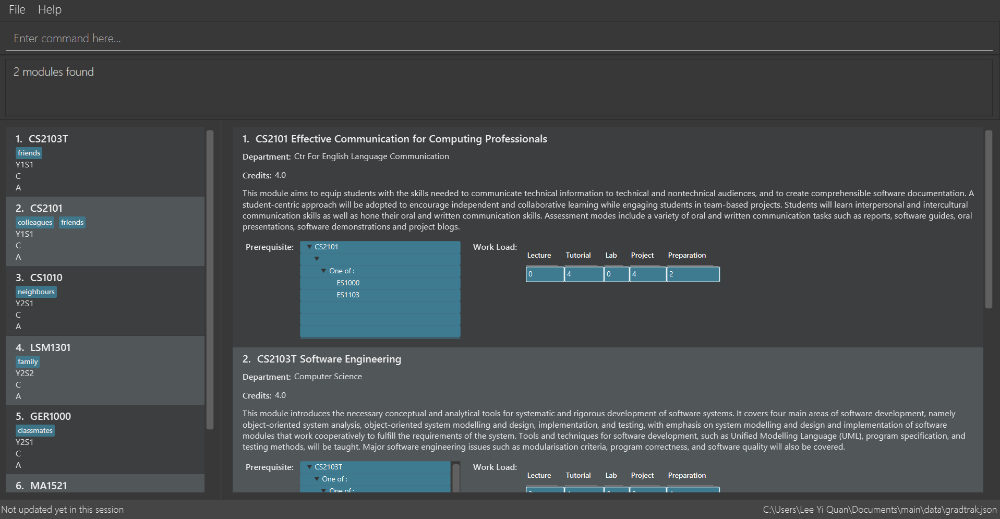

By: Team W14-4 Since: Feb 2019 Licence: MIT
- 1. Introduction
- 2. Quick Start
- 3. Features
- 3.1. Add module:
add - 3.2. Listing all modules in module plan:
cklimit - 3.3. Clear all data entered:
clear - 3.4. Sets the current semester:
cursem - 3.5. Delete module:
delete - 3.6. Display module information:
displaymod - 3.7. Display user information:
displayu - 3.8. Edit module:
edit - 3.9. Exit the program:
exit - 3.10. Find module:
find - 3.11. View all other commands :
help - 3.12. List entered commands:
history - 3.13. Listing all modules in module plan:
list - 3.14. Recommend module:
rec - 3.15. Redo the previously undone command:
redo - 3.16. Set course of study:
set - 3.17. Sets the total expected CAP and workload limit for each semester:
setlimit - 3.18. Undo previous command:
undo - 3.19. Save data
- 3.20. Encrypt data files
[coming in v2.0] - 3.21. Update module information
[coming in v2.0]
- 3.1. Add module:
- 4. FAQ
- 5. Command Summary
1. Introduction
GradTrak is an application designed for students of National University of Singapore (NUS) to easily track their graduation progress. It is currently limited to courses offered in School of Computing (SoC). The primary method of input is the Command Line Interface (CLI) which will benefit students of SoC as they generally type quickly. Proceed to Section 2, “Quick Start” to get started. Enjoy!
2. Quick Start
-
Ensure you have Java version
9or later installed in your Computer. -
Download the latest
GradTrak.jarhere. -
Copy the file to the folder you want to use as the home folder for your Module Plan.
-
Double-click the file to start the app. The GUI should appear in a few seconds.
 -
Type a command in the command box and press Enter to execute it.
e.g. typinghelpand pressing Enter will open the help window. -
Some example commands you can try:
-
addc/cs1010 s/y1s1: adds the module "CS1010", taken in Y1S1, into the module plan. -
delete1: deletes the first module on the most recently displayed list. -
exit: exits the app
-
-
Refer to Section 3, “Features” for details of each command.
3. Features
Command Format
-
Words in
UPPER_CASEare the parameters to be supplied by the user, e.g. inadd c/MODULE_CODE,MODULE_CODEis a parameter which can be used asadd c/cs1010. -
Items in square brackets are optional e.g
c/MODULE_CODE [g/GRADE_OBTAINED]can be used asc/cs1010 g/Aor asc/cs1010.
3.1. Add module: add
Adds a module to the module plan based on the given module code, semester taken and expected / obtained grade.
Format: add c/MODULE_CODE s/SEMESTER [min/NEW_EXPECTED_MIN_GRADE] [max/NEW_EXPECTED_MAX_GRADE] [lec/NEW_LECTURE_HOURS] [tut/NEW_TUTORIAL_HOURS] [lab/NEW_LAB_HOURS] [proj/NEW_PROJ_HOURS] [prep/NEW_PREP_HOURS]
or
add c/MODULE_CODE s/SEMESTER [g/NEW_EXPECTED_MIN_GRADE NEW_EXPECTED_MAX_GRADE] [lec/NEW_LECTURE_HOURS] [tut/NEW_TUTORIAL_HOURS] [lab/NEW_LAB_HOURS] [proj/NEW_PROJ_HOURS] [prep/NEW_PREP_HOURS]
Examples:
-
add c/CS2103T s/Y2S2
Adds CS2103T, to be taken in Y2S2, to the module plan. -
add c/CS2103T s/Y2S2 max/B_MINUS
Adds CS2103T, to be taken in Y2S2 with expected max grade B-, to the module plan.
3.2. Listing all modules in module plan: cklimit
Calculates the expected total workload and expected min and max CAP of each semester and checks against the limit set by the user.
Format: cklimit
3.3. Clear all data entered: clear
Deletes all the added modules.
Format: clear
3.4. Sets the current semester: cursem
Indicates that the previous semesters must have a single finalized grade in the expected grade range.
Format: cursem
3.5. Delete module: delete
Removes a module from the module plan based on module code or index in the most recently displayed list.
Format: delete INDEX
or
delete c/MODULE_CODE
Examples:
-
delete c/CS2103T
Deletes CS2103T from the module plan. -
delete 1
Deletes the first module on the most recently displayed list.
3.6. Display module information: displaymod
2 options to display module information, e.g. course description, prerequisites and courses succeeding the modules.
It is possible to search for multiple modules at the same time by typing the next module code preceded by a whitespace.
Format: displaymod [MODULE_CODE]++
1 mode for o/OPTIONS include:
-
o/info k/KEYWORDS n/[NUMBER]Coming in V1.3-
Display top n (3 if last argument is left blank, capped at 10) information most related modules based on keywords inserted.
-
Examples:
-
displaymod CS2103T
Display all information with regards to Module: CS2103T i.e Module name, Module description etc. . -
displaymod CS2103T CS2101 CS1010 ACC1002X
Displays all the of the 4 module information in-order with the search. -
displaymod o/info k/Software Engineering n/5
Display top 5 modules related to Software Engineering.
3.7. Display user information: displayu
Displays various user information based on options and other arguments given
Format: displayu o/OPTIONS [MORE_ARGUMENTS]
-
o/count-
Display user modular credit count.
-
-
o/CAP-
Display Cumulative Average Point (CAP) of user based on grades keyed in.
-
If grades are not keyed in, system will remind user that CAP calculated might not be accurate.
-
-
o/req [INDEX]-
Display all requirements for the course of study.
-
If courseReqCredits is specified: Displays information about n-th requirement in the order which it is displayed
-
-
o/req [c/BOOLEAN]-
Displays completed or incomplete requirements.
-
Also shows modules that can be taken to fulfill incomplete requirements.
-
Examples:
-
displayu o/count
Display user modular credit count. -
displayu o/req
Display all requirements for the course of study. -
displayu o/req 3
Displays information about 3rd requirement in the display all requirement command earlier. -
displayu o/req c/true
Displays completed requirement. -
displayu o/req c/false
Display requirements not completed and modules that can be taken to fulfil the requirements.
3.8. Edit module: edit
Edits the semester or grade of a module in the module plan based on module code or index in the most recently displayed list.
Format: edit INDEX [s/NEW_SEMESTER] [min/NEW_EXPECTED_MIN_GRADE] [max/NEW_EXPECTED_MAX_GRADE] [lec/NEW_LECTURE_HOURS] [tut/NEW_TUTORIAL_HOURS] [lab/NEW_LAB_HOURS] [proj/NEW_PROJ_HOURS] [prep/NEW_PREP_HOURS]
or
edit INDEX [s/NEW_SEMESTER] [g/NEW_EXPECTED_MIN_GRADE NEW_EXPECTED_MAX_GRADE] [lec/NEW_LECTURE_HOURS] [tut/NEW_TUTORIAL_HOURS] [lab/NEW_LAB_HOURS] [proj/NEW_PROJ_HOURS] [prep/NEW_PREP_HOURS]
Examples:
-
edit c/CS2103T s/Y2S2
Changes the semester taken of CS2103T to Y2S2. -
edit 2 min/A_PLUS
Changes the expected min grade of the second module in the most recently displayed list to A+.
3.9. Exit the program: exit
Exits the program.
Format: exit
3.10. Find module: find
Finds module(s) in the module plan based on module code, semester, grade or finished status.
Module code can be entered partially, but semester and grade must be exact.
Finished status must be 'y' (YES) or 'n' (NO).
Format: find [c/MODULE_CODE] [s/SEMESTER] [g/GRADE] [f/IS_FINISHED]
Examples:
-
find c/cs2
Lists all level-2000 CS modules in the module plan. -
find c/cs s/y1s2
Lists all CS modules (to be) taken in Y1S2.
3.11. View all other commands : help
Displays a list of all available commands.
Format: help
3.12. List entered commands: history
Lists all commands entered in reverse chronological order.
Format: history
|
Pressing the ↑ and ↓ arrows will display the previous and next input respectively in the command box. |
3.13. Listing all modules in module plan: list
Shows a list of all modules added by the user.
Format: list
3.14. Recommend module: rec
Recommends a list of modules that can be taken based on completed modules, FA and course requirements.
Modules are displayed according to the following order of priority: Core, FA, non-FA, General Education and Unrestricted Elective modules.
Format: rec
3.15. Redo the previously undone command: redo
Reverses the most recent undo command.
Format: redo
Examples:
-
delete 1
undo(reverses thedelete 1command)
redo(reapplies thedelete 1command) -
delete 1
redo
Theredocommand fails as there are noundocommands executed previously. -
delete 1
clear
undo(reverses theclearcommand)
undo(reverses thedelete 1command)
redo(reapplies thedelete 1command)
redo(reapplies theclearcommand)
3.16. Set course of study: set
Sets the course of study you are currently undertaking.
Format: set COURSE
Course abbreviations are as follows:
Examples:
-
set CS
Sets the course of study to Computer Science. Invokingsetcommand again will change your course of study
3.17. Sets the total expected CAP and workload limit for each semester: setlimit
Calculates the expected total workload and expected min and max CAP of each semester and checks against the limit set by the user.
Format: setlimit s/SEMESTER [g/MIN_GRADE MAX_GRADE] [lec/MIN_LECTURE_HOURS MAX_LECTURE_HOURS] [tut/MIN_TUTORIAL_HOURS MAX_TUTORIAL_HOURS] [lab/MIN_LAB_HOURS MAX_LAB_HOURS] [proj/MIN_PROJ_HOURS MAX_PROJ_HOURS] [prep/MIN_PREP_HOURS MAX_PREP_HOURS]
Examples:
-
setlimit s/Y1S1 g/2.5 5.0
3.18. Undo previous command: undo
Restores the module plan to the state before the previous undoable command was executed.
Format: undo
|
Undoable commands: those commands that modify the module plan or course ( |
Examples:
-
delete 1
displaym o/all
undo(reverses thedelete 1command) -
displaym o/all
history
undo
Theundocommand fails as there are no undoable commands executed previously. -
delete 1
clear
undo(reverses theclearcommand)
undo(reverses thedelete 1command)
3.19. Save data
Data are saved in the hard disk automatically after any command that changes them. There is no need to save manually.
3.20. Encrypt data files [coming in v2.0]
Encrypts user data files.
3.21. Update module information [coming in v2.0]
Retrieves the latest information of all modules from CORS.
4. FAQ
Q: How do I transfer my data to another Computer?
A: Install the app in the other computer and overwrite the empty data file it creates with the file that contains the data of your previous GradTrak folder.
5. Command Summary
-
Add:
add c/MODULE_CODE s/SEMESTER [g/MIN_GRADE_EXPECTED MAX_GRADE_EXPECTED]
or
add c/MODULE_CODE s/SEMESTER [g/GRADE_OBTAINED] -
Cklimit:
cklimit -
Clear:
clear -
Cursem:
cursem s/SEMESTER -
Delete:
delete c/MODULE_CODE
or
delete INDEX -
Displaym:
displaym o/OPTIONS [MORE_ARGUMENTS] -
Displayu:
displayu o/OPTIONS [MORE_ARGUMENTS] -
Edit:
edit c/MODULE_CODE [s/NEW_SEMESTER] [g/NEW_GRADE_OBTAINED]
or
edit INDEX [s/NEW_SEMESTER] [g/NEW_GRADE_OBTAINED] -
Exit:
exit -
Find:
find [c/MODULE_CODE] [s/SEMESTER] [g/GRADE] [f/IS_FINISHED] -
Help:
help -
History:
history -
List:
list -
Recommend:
rec -
Redo:
redo -
Set:
set COURSE -
Setlimit:
setlimit s/SEMESTER [g/MIN_GRADE MAX_GRADE] [lec/MIN_LECTURE_HOURS MAX_LECTURE_HOURS] [tut/MIN_TUTORIAL_HOURS MAX_TUTORIAL_HOURS] [lab/MIN_LAB_HOURS MAX_LAB_HOURS] [proj/MIN_PROJ_HOURS MAX_PROJ_HOURS] [prep/MIN_PREP_HOURS MAX_PREP_HOURS] -
Undo:
undo